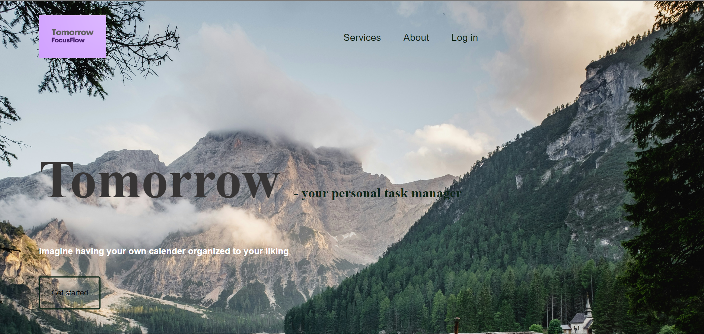
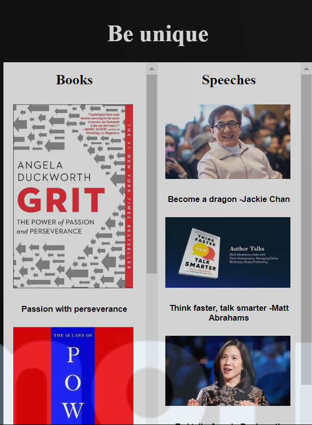
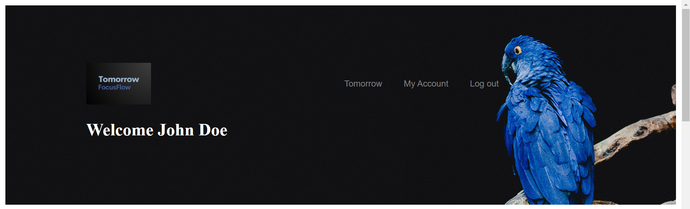
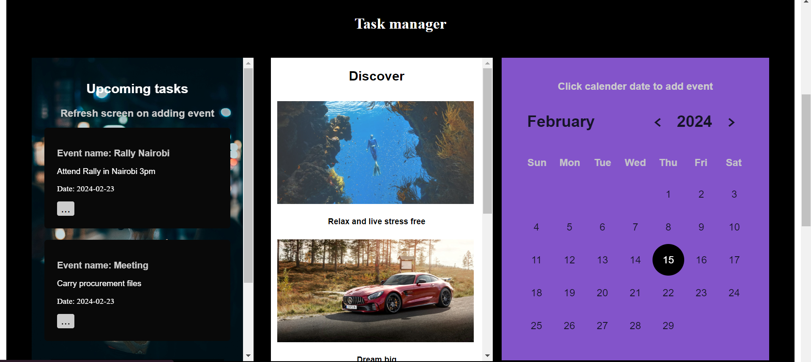
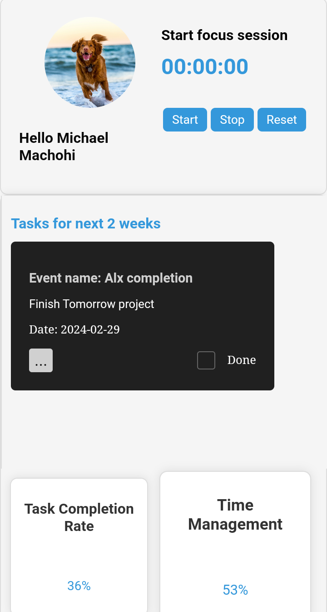
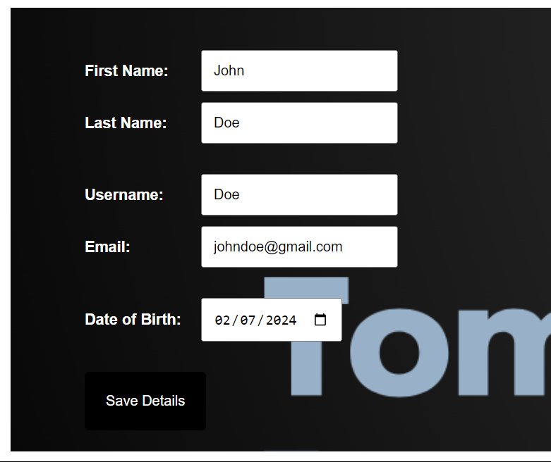

Michael Machohi
Mechatronic and Software engineer
Tomorrow [Check out on github?]
Introduction:
Have you ever sat down and wondered, if I were to build something for my own use, something comprehensive that would have everything I ever needed, what would it be? Well, I found myself in this situation in early March 2024. I researched and thought hard for days, but couldn’t identify anything I desperately needed. My focus shifted from designing something essential to a project I would do for fun while gaining valuable skills. This is how I came up with the project Tomorrow!
Tomorrow is a personal task manager, a web application designed to assist users in organizing and managing their tasks efficiently. The catchphrase was “Imagine having your own calendar organized to your liking”.
The project specialized in creating personal task management solutions tailored just for the user. A stress-free tomorrow, where tasks are effortlessly managed, and goals are within reach.
Tomorrow’s culture: “We embrace challenges with enthusiasm and foster an environment that encourages creativity, collaboration, and continuous improvement. Together, we shape a tomorrow where productivity knows no bounds”
Services:
“Discover the Tomorrow difference in personal task management. Our approach elevates your productivity. we bring your ideas to life.”
1. Task Priority: A user could easily prioritize and organize to-dos, ensuring that he focus on what matters most. One could integrate the high-priority tasks with Tomorrow’s calendar, receive instant event confirmation emails, and never miss an important deadline. “Take control of your schedule and enhance your productivity. Your tasks, your priorities, effortlessly managed in one place”
2. Productivity analysis: Users could track their time, task response, and task completion times effortlessly. They would be able to gain valuable data-driven insights to optimize their workflow, identify trends, and enhance their efficiency. “Stay informed, make informed decisions, and elevate your productivity game with our comprehensive analysis tools.”
3. Goal tracking: Users would be able to send letters to their future self, set and achieve milestones, and nurture personal growth. They could also be able to explore curated recommendations for insightful books and impactful speeches, fostering continuous selfdevelopment. “Transform your ambitions into reality with a dedicated space that empowers you to plan, reflect, and progress towards the best version of yourself.”
Services structure:
1. Task management
Project Tomorrow allowed users to create events using a dynamic calendar, manage them by editing or deleting them via a side panel.
An automated email system was implemented to confirm events have been saved, and also a reminder email 1 day prior to the D-day
2. Goal Tracking
The Future Me section was where account users could create Future Me letters. It had a panel that showed how many letters a user has written and the delivery date.
Delivery of the letters was via automated email as well.
The productivity analysis section was where analysis was done on time management, task responsiveness and time taken to complete a task
Architecture:
The project is outlined in three main phases: data population, data storage, and data projection.
1. Data Population: Data population was mainly based on user data. Users could create accounts and sign in. Data was based on their tasks and Future me letters
2. Data Storage: Data entered by users was mapped using MySQL connector to a MySQL database, where it awaited retrieval and posting for users to access.
3. Data Projection: The project includes a user-friendly web dashboard created using HTML, CSS, and JavaScript for the front end. Flask was employed for back-end development due to its simplicity. Data is visualized and monitored through this interface.
Technologies used:
1. Html and CSS – Used for creating static website for the landing and project page
2. JavaScript- Used frontend/client side js for event handling( button clicks etc), making ajax requests(for updating user account details) and generally making the website dynamic.
3. Flask framework – Used for serving web pages and data manipulation in the database. It also handled the mailing via Flask Mail using SMTP
4. Mail Trap – it’s the actual emailing system, they host my mail server.
5. Bcrypt algorithm - Used for password encryption, hashing of passwords method 2b
6. MySQL DBMS – Used to store the user details, user events , overall user progress and user letters
7. Web server – nginx –I used nginx as a reverse proxy for flask to serve the web pages.
8. SSL implementation – Let’s encrypt
Features:
1. Dashboard
2. Dynamic calender and Task bar for uploading tasks
3. Productivity Status
4. Settings
Development report:
One of my greatest achievements is generally the project working how I pictured. Also, being able to implement an automatic mailing system, and learning how to write visually appealing emails has made me feel like an engineer.
Challenges: Even though I chose to be a front-end engineer, in future I hope to be doing full stack projects and this means il have to up my back-end game for better functioning projects in the near future.
Areas of improvement- I have really improved in using flask, compared to the foundations project I did on a sensor logger
Next steps- For the big part, I will now need to figure out the algorithm or method of analysis I will be using to analyze user’s data so as to make the productivity analysis more realistic
Generally, I would like to make the website more dynamic and user friendly. I will implement “settings” section where users can customize their environment, choose themes and apply them.
As they say, the customer is always right!